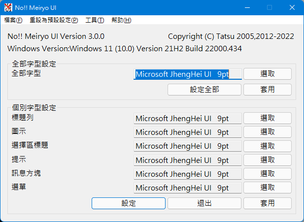
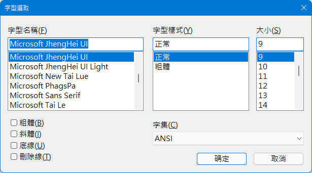
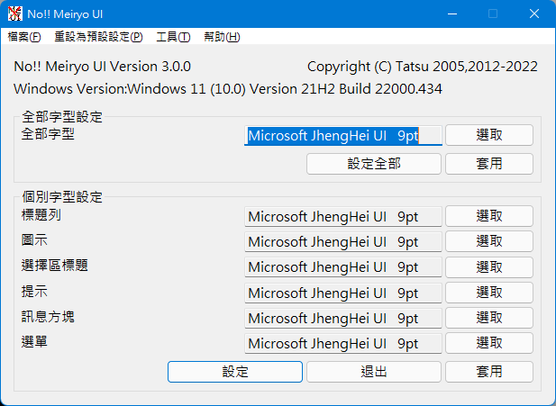
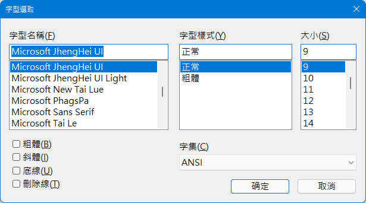

執行「noMeiryoUI.exe」。
程式圖示： 。
。
然後將會顯示如下圖所示的視窗。

按下「選取」按鈕來設定使用者介面元素所使用的字型。
當你按下「選取」按鈕時，將會顯示這個對話方塊。

選擇字型、大小、字型樣式和字集，然後按下「確定」按鈕。
按下「設定」按鈕，你就能設定使用者介面字型。
執行「noMeiryoUI.exe」。
程式圖示： 。
。
然後將會顯示如下圖所示的視窗。

按下「選取」按鈕來設定使用者介面元素所使用的字型。
當你按下「選取」按鈕時，將會顯示這個對話方塊。

選擇字型、大小、字型樣式和字集，然後按下「確定」按鈕。
按下「設定」按鈕，你就能設定使用者介面字型。
命令列格式如下：
noMeiryoUI [font_setting_file] [-set]
如果你指定了「font setting file」，字型設定檔將會在程式啟動時載入。
如果你選擇了「-set」選項，系統字型將會被自動設定。